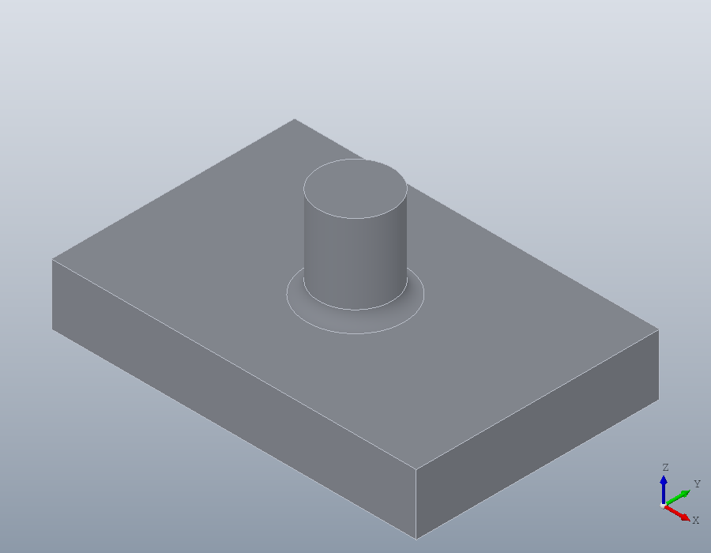
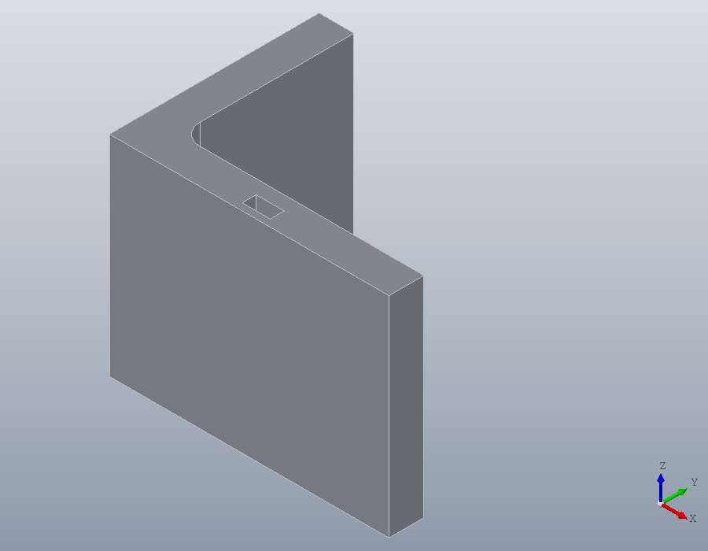
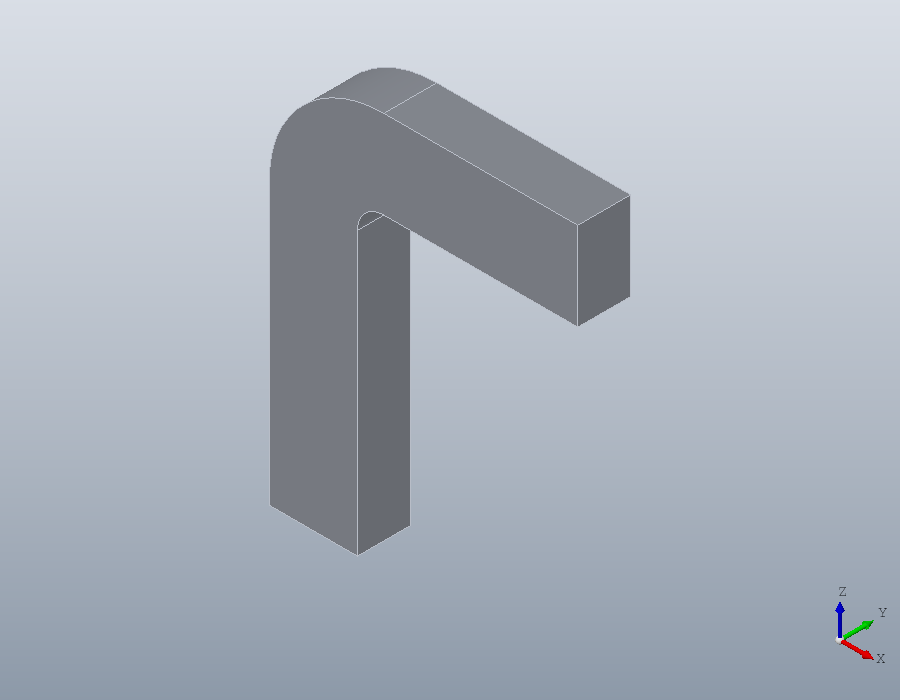
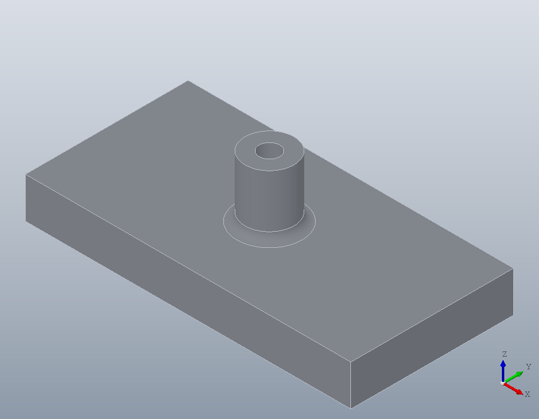

Naming faces
A script that rounds an edge or drills into a face has to say which one. Choosing it by its index, or by the box it lies in, works for the part as it stands, and breaks when an earlier dimension changes. A name given to a face where it is made stays with that face through every later step, so the script keeps finding it however the part changes.
Where positions break
A plate 60 long carries a boss in the middle of its top. The edge where the boss meets the plate is chosen by its kind and the box it lies in, and rounded.
L = 60;
part = union (solid.box (L, 40, 10), ...
translate (solid.cylinder (6, 15), [L / 2, 20, 10]));
E = edges (part, 'Type', 'circle', 'Within', [23, 13, 10, 37, 27, 10])E = 10Make the plate 80 long and the boss moves to x = 40. The same box now finds nothing, and the script stops at the fillet.
L = 80;
part = union (solid.box (L, 40, 10), ...
translate (solid.cylinder (6, 15), [L / 2, 20, 10]));
E = edges (part, 'Type', 'circle', 'Within', [23, 13, 10, 37, 27, 10])E = [](1x0)Giving names
The functions that make solids, from solid.box to solid.extrude, take 'Label', a name for the faces they make. A box names its six sides after the way they face: plate.xmin and plate.xmax, plate.ymin and plate.ymax, and plate.zmin at the bottom and plate.zmax at the top. A cylinder names its ends boss.start and boss.end and its round face boss.side. The reference page of each function lists the names it gives.
The edge where the boss meets the plate lies between the top of the plate and the side of the boss, and edges finds it so.
L = 60;
plate = solid.box (L, 40, 10, 'Label', 'plate');
boss = solid.cylinder (6, 15, geom.UCS ([0, 0, 1], [L / 2, 20, 10]), ...
'Label', 'boss');
part = union (plate, boss);
E = edges (part, 'Between', {'plate.zmax', 'boss.side'})
part = fillet (part, E, 2, 'Label', 'foot');
show (part);E = 10
The plate made 80 long, the same lines find the same edge where the boss now stands.
L = 80;
plate = solid.box (L, 40, 10, 'Label', 'plate');
boss = solid.cylinder (6, 15, geom.UCS ([0, 0, 1], [L / 2, 20, 10]), ...
'Label', 'boss');
part = union (plate, boss);
E = edges (part, 'Between', {'plate.zmax', 'boss.side'})
part = fillet (part, E, 2, 'Label', 'foot');E = 10The fillet was given a name too: foot is the round it made. A face that a step makes without 'Label' has no name.
Choosing by name
faces takes a name with 'Label'. A name also chooses every face whose name begins with it and a dot, so plate is all the faces of the plate, and a cell array chooses the faces of each name in it.
faces (part, 'Label', 'plate.zmax')
faces (part, 'Label', 'plate')
faces (part, 'Label', {'boss.end', 'foot'})ans = 1
ans =
1 3 4 5 6 8
ans =
2 9A name no face has is an error, so that a name mistyped, or one whose face was cut away, is not taken for an empty choice.
faces (part, 'Label', 'plate.top');solid.Shape.faces: no face is named 'plate.top'.'Adjacent' chooses the faces that share an edge with each face given. The faces next to the round are the top of the plate and the side of the boss.
faces (part, 'Adjacent', 'foot')ans =
1 7For edges, 'Face' chooses every edge round the faces given, and 'Between' the edges between two of them, as above. These are the four edges round the top of the plate.
edges (part, 'Face', 'plate.zmax', 'Type', 'line')ans =
2 3 4 5Names through later steps
A face keeps its names when the shape is moved, turned or cut. A face cut in two is two faces, each with the name. A slot across the plate splits its top.
slotted = subtract (part, translate (solid.box (6, 50, 4), [10, -5, 6]));
faces (slotted, 'Label', 'plate.zmax')ans =
1 7Two faces made flush by a union become one face, which has the names of both. A block set against the end of the plate continues its top.
block = solid.box (20, 40, 10, geom.UCS ([0, 0, 1], [L, 0, 0]), ...
'Label', 'block');
longer = union (part, block);
isequal (faces (longer, 'Label', 'plate.zmax'), ...
faces (longer, 'Label', 'block.zmax'))ans = 1Points and frames from names
normal gives the outward normal of a flat face, corner the point a set of faces share, centre the centre of a circular edge and midpoint the middle of an edge. From them a coordinate system can be laid on a face so that it moves with the part. Here it lies on the top of the plate, its origin at the corner with the front and the left side, its x axis along the front.
top = faces (part, 'Label', 'plate.zmax');
O = corner (part, faces (part, 'Label', {'plate.zmax', 'plate.xmin', ...
'plate.ymin'}))
X = corner (part, faces (part, 'Label', {'plate.zmax', 'plate.xmax', ...
'plate.ymin'}));
U = geom.UCS (normal (part, top), O, X)O =
0 0 10
U =
geom.UCS: origin [0, 0, 10], x axis [1, 0, 0], normal [0, 0, 1]The centre of the top of the boss is where a hole down its axis goes.
C = centre (part, edges (part, 'Between', {'boss.end', 'boss.side'}))
part = hole (part, C, 5, 20, 'Label', 'bore');
faces (part, 'Label', 'bore')C =
40 20 25
ans =
10 11Naming the walls of a profile
A solid made from a region names its two ends start and end and its walls side, those of its holes hole. The segments of the region can be named too, one name for each segment in the order its vertices are written, '' for a segment left unnamed, and each wall then takes its segment's name below its role. An angle section has its inside face named, and a keyway through it its floor and top.
key = geom.Polyline ([18, 1; 22, 1; 22, 3; 18, 3], 'Closed', true, ...
'Label', {'key_floor', '', 'key_top', ''});
outline = geom.Polyline ([0, 0; 40, 0; 40, 5; 5, 5; 5, 30; 0, 30], ...
'Closed', true, ...
'Label', {'base', '', '', 'inside', '', ''});The inside corner, the fourth vertex, is rounded before the region is made. The arc takes the name given to the fillet, and the segments it shortens keep theirs.
outline = fillet (outline, 3, 4, 'Label', 'corner_round');
section = geom.Region (outline, {key});
angle = solid.extrude (section, 30, 'Label', 'angle');
faces (angle, 'Label', 'angle.side.inside')
faces (angle, 'Label', 'angle.side.corner_round')
faces (angle, 'Label', 'angle.hole.key_floor')
show (angle);ans = 5
ans = 4
ans = 11
angle.side still names every wall of the outline, and angle.hole every wall of the keyway.
numel (faces (angle, 'Label', 'angle.side'))ans = 7Along a path
A path can be labelled the same way, and a sweep then records along which segment of it each wall runs. 'Along' chooses by that. A bar 10 by 6 is swept up 40 and across 30, the bend rounded to 8 and named.
bar = geom.Region ([-5, -3; 5, -3; 5, 3; -5, 3], 'Label', {'', '', 'top', ''});
route = geom.Path ([0, 0, 0; 0, 0, 40; 30, 0, 40], ...
'Label', {'upright', 'arm'});
route = fillet (route, 8, 'Label', 'bend');
bracket = solid.sweep (bar, route, 'Label', 'bracket');
faces (bracket, 'Label', 'bracket.side', 'Along', 'arm')
faces (bracket, 'Label', 'bracket.side.top', 'Along', 'arm')
faces (bracket, 'Along', 'bend')
show (bracket);ans =
9 10 11 12
ans = 11
ans =
5 6 7 8
Copies
copy, rectarray and polararray number their copies, and 'Copy' chooses the faces of some of them. A block rounded along its top edges is set round a circle six times, and the round along the front of the third is found by its name, its copy and the face it borders.
blank = translate (solid.box (20, 10, 5, 'Label', 'plate'), [30, -5, 0]);
blank = fillet (blank, edges (blank, 'Face', 'plate.zmax'), 2, ...
'Label', 'edge_round');
ring = polararray (blank, 6, 360);
faces (ring, 'Label', 'edge_round', 'Copy', 3, 'Adjacent', 'plate.ymin')ans = 27Picks written as names
On a part with names, pick writes its code by them, and pickucs builds its coordinate system from them, so that what is picked once keeps being found. Here the edge at the top of the boss is picked, and the top of the plate for a coordinate system, its origin at the front left corner and its x axis towards the front right one. This guide is built with nobody at the mouse, so the build clicks at those points.
V = show (part);
[E, CODE] = pick (V, 'edge')
[U, CODE] = pickucs (V)E = 17
CODE = edges (part, 'Between', {'boss.end', 'boss.side'})
U =
geom.UCS: origin [0, 0, 10], x axis [1, 0, 0], normal [0, 0, 1]
CODE = geom.UCS (normal (part, faces (part, 'Label', 'plate.zmax')), ...
corner (part, faces (part, 'Label', {'plate.xmin', 'plate.ymin', ...
'plate.zmax'})), ...
corner (part, faces (part, 'Label', {'plate.xmax', 'plate.ymin', ...
'plate.zmax'})))
Names and saved shapes
The names are kept in the shape itself, so they stay with it when it is passed to a function, saved and loaded. They depend on how Open CASCADE numbers the faces, so a shape saved under one version of Open CASCADE and loaded under another has its names refused, and choosing a face by name says to run the script that made it again.